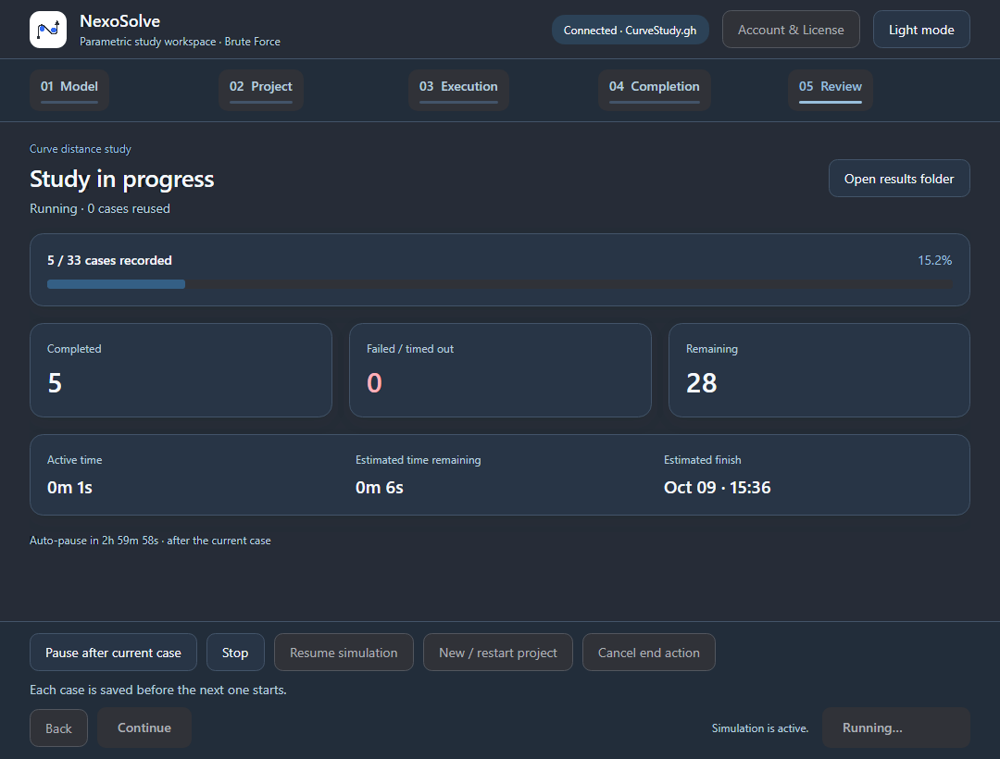
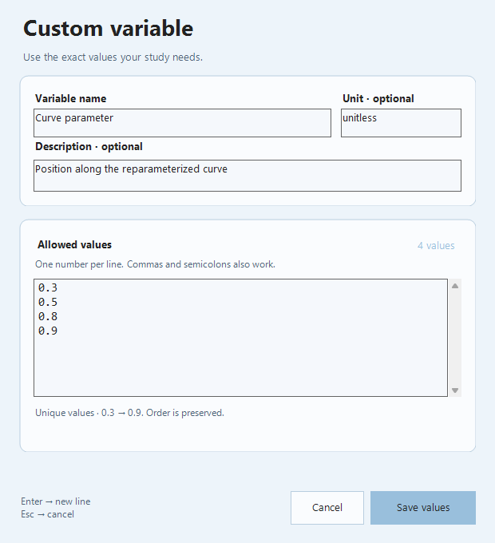
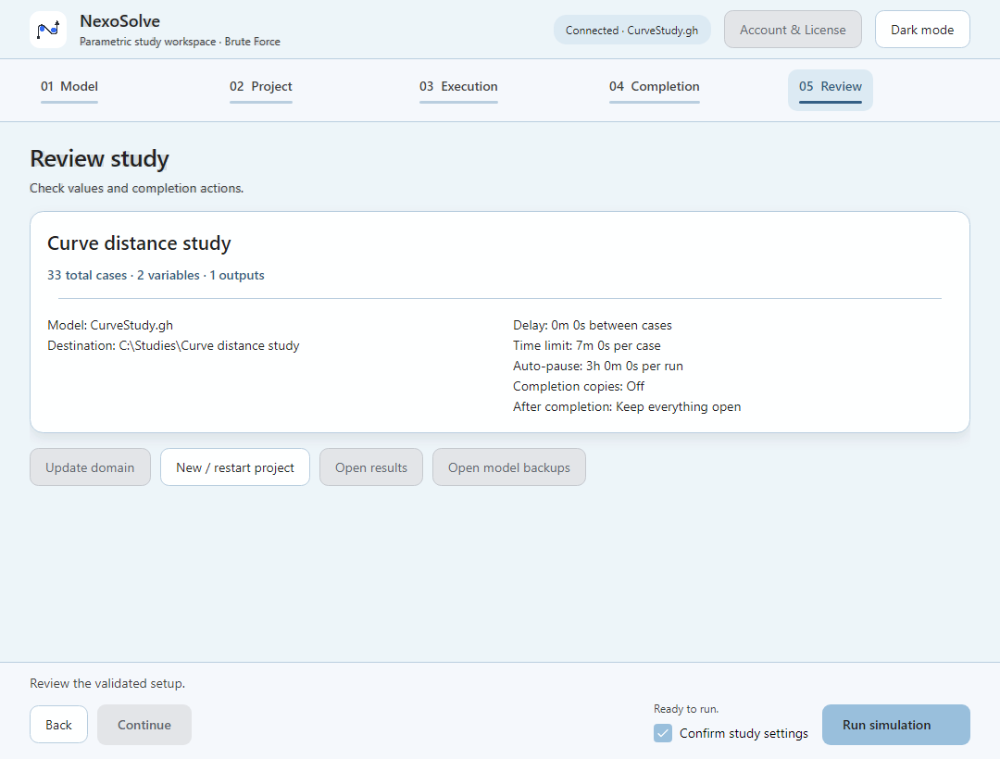
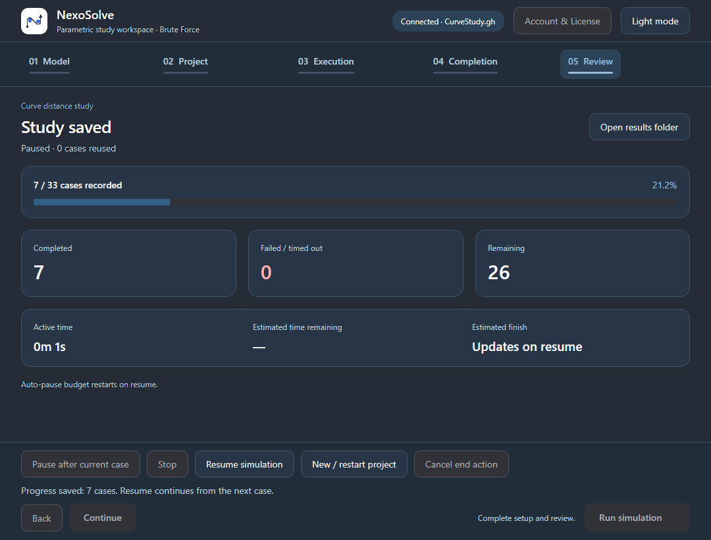
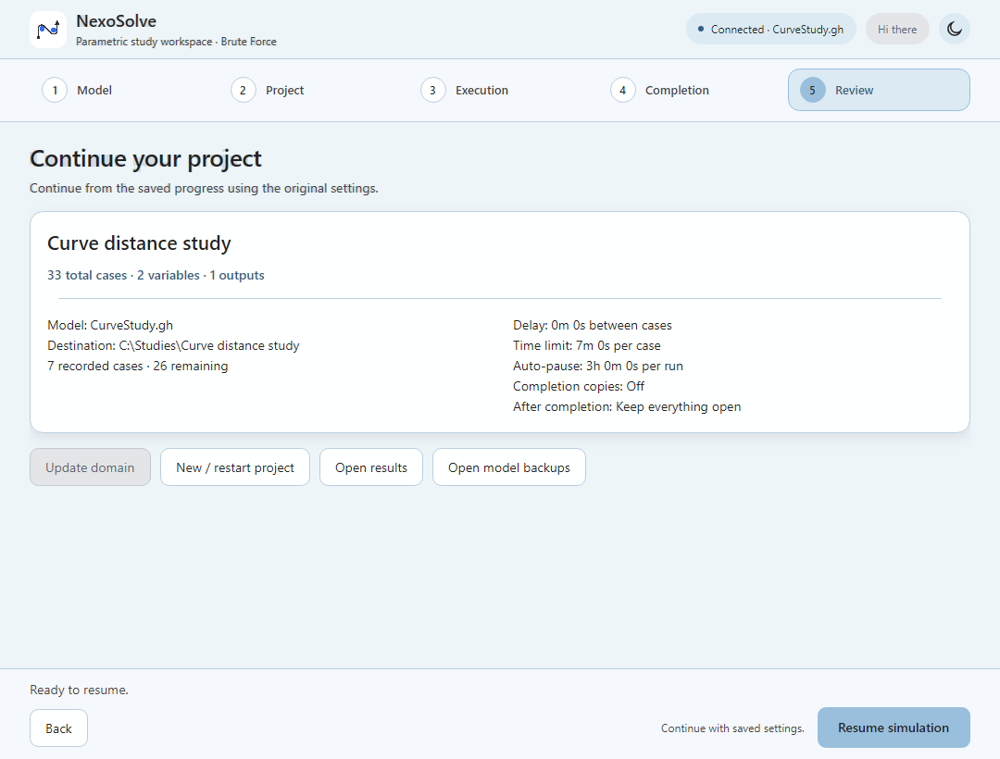

Know what ran
Review the full case count, completed, failed and remaining cases, active time and estimated time before and during a study.
NexoNest / Parametric studies
Explore every combination. Keep every result. Run finite parametric studies from your Grasshopper definition with a dedicated desktop workspace. Define your inputs, record the outputs that matter, and follow each case from calculation to saved results.
How can you explore a finite design space without losing progress, results, or the calculation context?
Keep geometry, simulation and evaluation in Grasshopper. NexoSolve manages the sequence, records each case locally, and helps you resume or review the study.
Review the full case count, completed, failed and remaining cases, active time and estimated time before and during a study.
Pause or stop at a saved case boundary, then resume with recorded progress and execution settings.
Save case results locally and export numeric data as CSV with per-scenario geometry and optional images.
Reuse matching successful cases when you expand a domain and the underlying calculation is still compatible.
See completed, failed and remaining cases, active time and estimated time remaining in one workspace. NexoSolve runs cases serially; geometry, simulation and evaluation stay in your Grasshopper definition.

Register connected number sliders or explicit numeric lists, numeric outputs, optional meshes and viewport captures.
Choose a local project destination. NexoSolve keeps the study with its recorded model context.
Set case timing, active run budget and completion behavior.
Confirm the variables, case count and destination before starting exhaustive enumeration.
Inspect locally saved results, export numeric data and reopen the study when needed.
Name your variables, add units and descriptions, and preserve the order of custom values. Use connected sliders or explicit numeric lists to define the finite domain.

Check the full case count, project destination, timing and completion settings before starting. Exhaustive enumeration grows with the product of the variable value counts; choose a manageable domain.

Pause or stop after the current case is saved. Resume a saved study with its recorded progress and execution settings. Synchronous Grasshopper components may need to return before a pause or timeout can take effect.

Expand or change a study domain without recalculating matching successful cases when the underlying calculation remains compatible.
Saved model copies and calculation signatures help keep the study context available for comparison and recovery.
Changes to the calculation can block reuse. External data and solver changes require an explicit revision so earlier results are not silently treated as equivalent.
Each committed case is saved locally. Reopen the study to review progress and continue when needed. Export numeric results as CSV, with per-scenario result and geometry files and optional viewport images. Model backups support recovery and comparison. The licensing service handles account and activation information; it does not receive your models or study results.

Use a bright workspace in well-lit modeling environments.
Switch to a darker workspace while keeping the same study controls and workflow.
| Area | Requirement |
|---|---|
| Operating system | Windows x64 |
| Host | Rhino 8.34 or later with Grasshopper, running .NET 8 |
| Package | Complete installation folder: NexoSolve.gha plus the adjacent Desktop folder; the desktop includes its Windows runtime |
| Connection | Internet required for first activation and email sign-in |
| Access | Duration and conditions |
|---|---|
| Guest trial | 14 days from first online device activation; no login required |
| Verified account trial | Until day 90 from the same first activation; guest time is included |
| License | Paid license available as a 1, 3, 6 or 12-month voucher requested by email |
| Course voucher | Redeem an eligible participant code inside Account & License |
| Term | USD | IRR (Rial) |
|---|---|---|
| 1 month | $6 | 1,900,000 IRR |
| 3 months | $15 | 4,900,000 IRR |
| 6 months | $27 | 8,900,000 IRR |
| 12 months | $45 | 15,900,000 IRR |
Each option is a prepaid voucher for one user and one active device. No recurring billing. To purchase and receive your selected voucher, email nexonest.contact@gmail.com. Voucher issuance is handled manually after payment confirmation.
One active device is allowed per account. Sign in with an email verification code. Normal license checks send no email. Reinstalling does not restart the trial.
Signed offline access lasts up to seven days, bounded by trial or license expiry. If access expires during a study, the current case finishes and saves before the study pauses. Device transfers can require waiting up to seven days for an existing offline activation to expire.
Get the NexoSolve GHA through food4Rhino or the Rhino Package Manager. Do not download plugin files from GitHub.
Use Help inside NexoSolve to get or update the companion Desktop app.
Follow the instructions shown by the plugin and restart Rhino if it asks you to do so.
Open Rhino and Grasshopper, then launch NexoSolve from Nexo Connector.
The current desktop runs exhaustive finite studies. It does not automatically search for an optimum or offer optimizer selection.
Your Grasshopper definition owns the analysis. Register its inputs and numeric outputs, then validate the study on your own definition.
Use NexoSolve Club to check Grasshopper plugin updates. Desktop updates are user-started; they are not installed in the background.
Contact support for a device transfer. Trial history and license expiry remain unchanged.
Version 0.0.1 Beta is publicly available. Automated engine, recovery, packaging and UI checks are recorded, as are live guest activation and license signature checks. Broader Rhino acceptance remains ongoing. Screenshots show the actual application with demonstration data, not a completed customer simulation.
Get the NexoSolve Grasshopper plugin from food4Rhino or the Rhino Package Manager. Get or update the companion Desktop app through Help inside the plugin. For a 1, 3, 6 or 12-month voucher, email nexonest.contact@gmail.com; issuance is manual after payment confirmation.